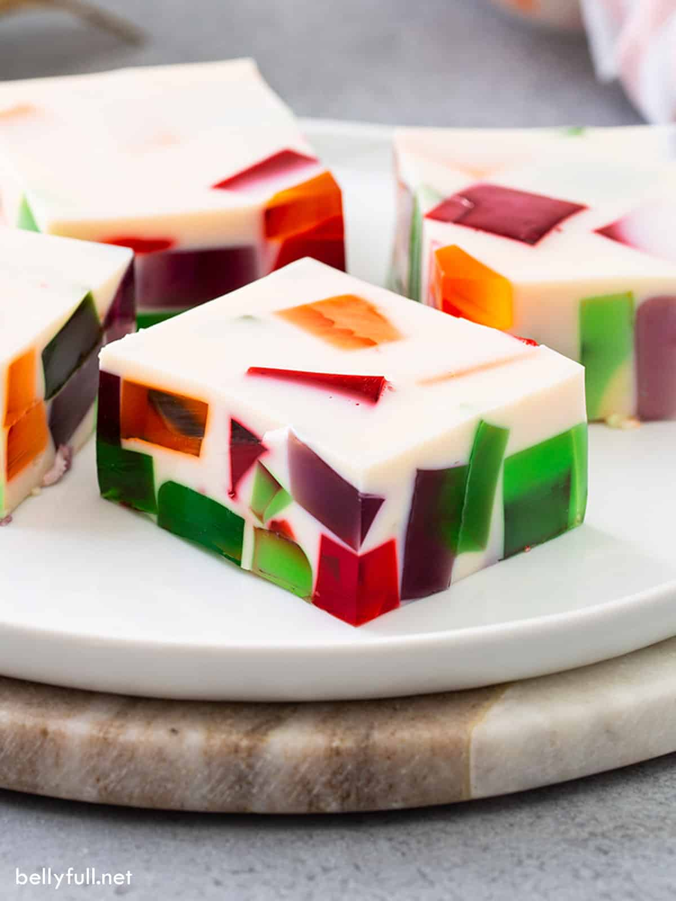

Gelatina de Mama Carmen

Gelatina
Gelatina Recipe by Mama Carmen. Milk based.
Ingredients
- 6 packets Knox unflavored gelatin
- 8 cups of milk
- 2 1/2 cans 14 oz lechera (2 to reduce sweetness)
- 1 spoonful vanilla extract
- 4 oz strawberry Jello
- 4 oz orange Jello
- 4 oz lime Jello
- 4 oz lemon Jello
Steps
Jello Prep
- Repeat steps for each Jello flavor
- Boil 3/4 cup water
- Stir boiled water in a bowl with powdered Jello until dissolved
- Add 3/4 cup cold water and stir
- Leave in fridge for 4 hrs to cool
Main Steps
- In a pot, mix milk and the 6 unflavored Knox packets
- Add lechera and vanilla and stir until smooth
- Place pot on heat and stir until boiling
- Turn off heat until not boiling, then turn heat back on until boiling again, stir continuously
- Turn off heat and stir until cool enough to pour
- Use a colander to strain into a glass baking mold. Stir every once in a while until fully cooled
- Cut flavored Jello into squares and place squares into the mold
- Place into fridge to solidify overnight